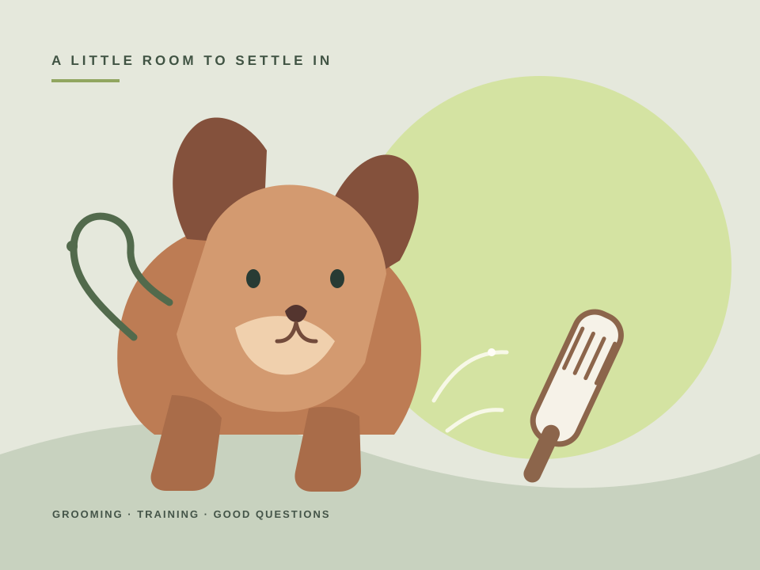

01 GROOMING
Share the kind of care you’re looking for.
Note the service you have in mind, your dog’s coat or handling preferences, and a good way to discuss details.
See a sample inquiryRoom for a good first hello
A fictional pet-care example with clear service paths and thoughtful first questions for grooming and training inquiries.
Explore the sampleILLUSTRATIVE EXAMPLE · NO BOOKING OR SERVICE CLAIM

A clear path to ask
This made-up example helps someone describe the service they have in mind and share the preferences that could make a first conversation more useful.
01 GROOMING
Note the service you have in mind, your dog’s coat or handling preferences, and a good way to discuss details.
See a sample inquiry02 TRAINING
A first question can name a goal, what you have already tried and what you would like to learn about the approach.
Read the scope noteGrooming and training are separate service conversations here. Share handling preferences only; this example does not ask for health or medication details.
The owner side · phone practice
Open an inquiry, prepare a reply and shape customer instructions or page copy from your phone.
Local practice only. Changes stay in this page until reload; nothing sends or publishes.
Grooming · first question
“I’m looking for a bath and brush for my dog. They do best with a little time to settle in. What should I share before we talk?”
Pet: Juniper, a fictional dog
Service: Bath and brush inquiry
Handling preference: A calm introduction and time to settle
Next question: Ask what coat care the person has in mind; explain that details are discussed directly.
Status is shown in this practice only.
Grooming inquiry · New inquiry. Reply draft ready to shape. Instructions are visible above.
A possible next step
The approved process begins with a free account and a website interview. This preview does not create an account or submit interview information.
Create your free account and complete your website interview.
02Review three design directions, choose your favorite and request any adjustments.
03Review your staged website.
04Pay $199 and approve launch—we connect your domain and get your website online.
We aim for same-day launch once your site is approved, payment is complete and the domain is ready.
Domain and email setup options are agreed in scope. Mailbox subscriptions are separate.
The eligible focused starter is $199 upfront, including the first year of managed hosting.
One focused starter website with one year of basic managed hosting, plus a first-year standard available domain when needed or connection of your existing domain. After year one, hosting is $9.99/month only with separate recurring authorization; domain renewal is separate at the disclosed registrar price. Mailbox subscriptions, ecommerce, live calendar sync and advanced features are separate scope.